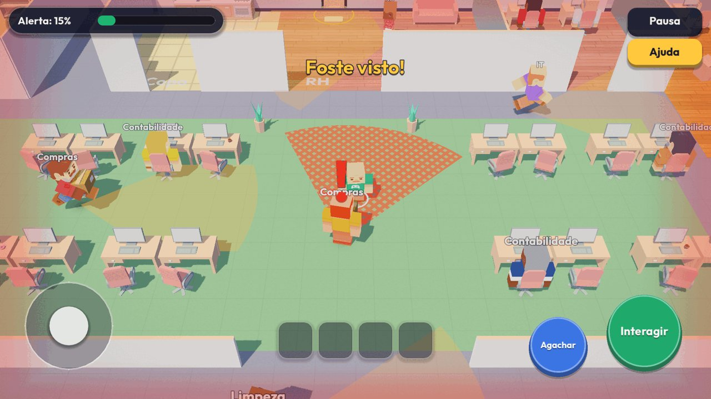
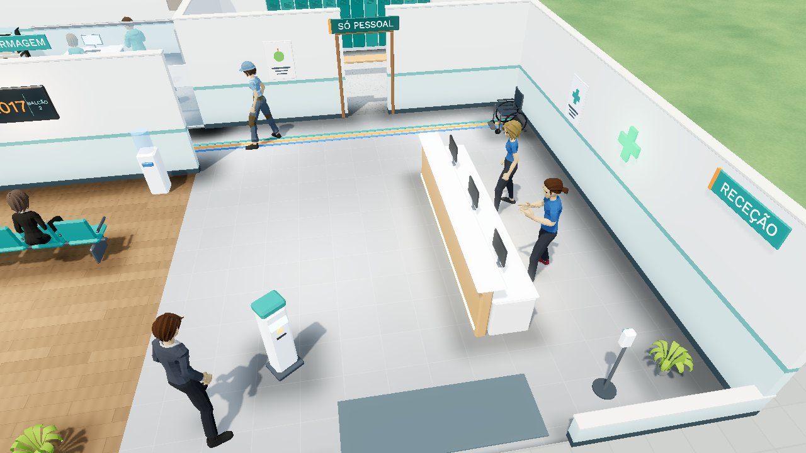
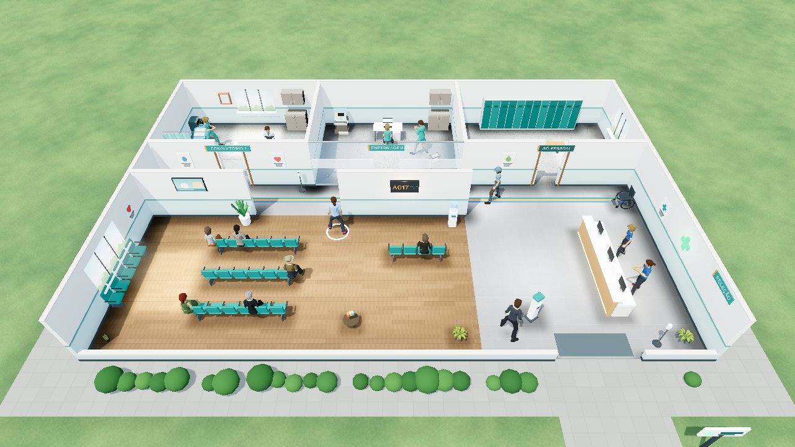
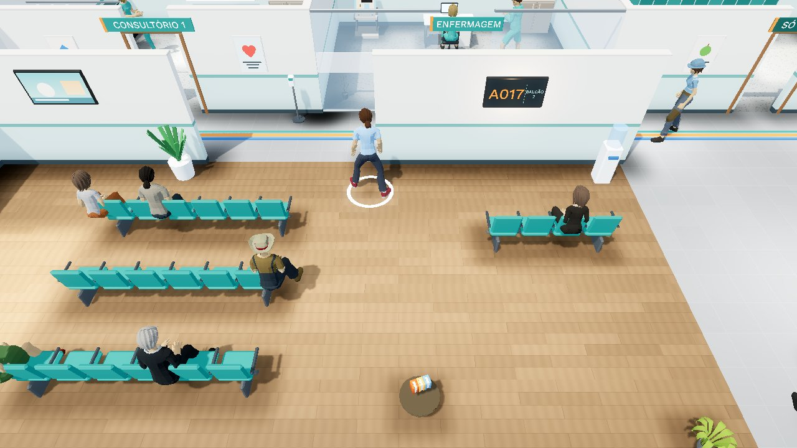
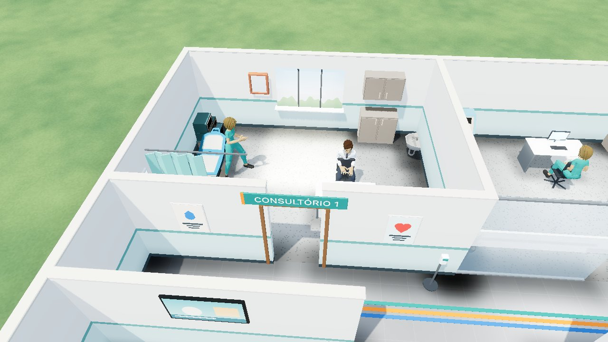

Out of Office – the escape
Foge do escritório sem ninguém dar por isso.
Um jogo de infiltração satírico sobre a vida de escritório. Esconde-te atrás de estantes, faz o café entornar, põe o ecrã azul e sai pela porta antes das seis.
O jogo
Infiltração com humor
Cones de visão, distrações e uma equipa de Recursos Humanos sempre a perguntar como te sentes.
Episódios como numa série
Cada nível abre com uma mini-cena animada para te dar o contexto. Tens 6 temporadas disponíveis, com níveis de dificuldade diferentes. Mais conteúdo será disponibilizado em breve.
O teu colega, à tua maneira
Escolhe a personagem, os chapéus, os óculos e o rasto que deixas ao fugir.
Em desenvolvimento
Capítulo 2: A Clínica
Depois das 6 temporadas do escritório, o próximo capítulo passa-se numa clínica. O mesmo protagonista, num mundo novo: salas de espera, consultórios, enfermagem e uma receção que não deixa passar ninguém sem senha. Estamos a trabalhar nele e a história ainda está a ser escrita.




Personagens novas, com proporções mais naturais e animações mais suaves, um cenário mais detalhado e luz nova.
Uma espreitadela






Imagens de uma versão em desenvolvimento. O aspeto final pode mudar.
Capturas
A equipa
Somos a Out Of Office Dev Team, e o Out of Office – the escape é o nosso primeiro trabalho. Nasceu de uma ideia simples: toda a gente já olhou, numa sexta-feira à tarde, para a porta de saída.
Gostamos de jogos que se percebem num minuto, que fazem sorrir e que respeitam o tempo de quem joga. O jogo é gratuito, com anúncios opcionais e compras que nunca são necessárias para o acabar.
Outros trabalhos
Trio Pro
Guia de Fortnite por função (Fragger, IGL e Suporte), com vídeos, em 5 idiomas e com uma app para Windows. Projeto não oficial: Fortnite é uma marca da Epic Games.
Contacto e apoio
Dúvidas, sugestões ou problemas? Escreve-nos para outofofficedevteam@gmail.com.